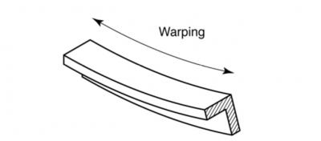

Parts warpage - In particualar with regards to Primary Package warpage. If warpage is happening on different lines at the same time it could be resin related

1. If part is bending to the B-half could mean that the bowl area is getting stuck to the A-half. This could indicate that there is too much hold pressure.
2. Also check that cavity ventilation is set up correctly.
3. Nestal Only: Check Parametes T74.1(Blowing Time mold aeration 1) and T75.1(Delay time from start cooling time) in page 2.6 Air Controls. The sum of these two parameters must be bigger than the cooling time. If not the cavity ventilation will stop blowing before the cooling time finish and mold opens. Set parameter T74.1 higher so that cavity ventilation will be working when mold opens.
1. If part is bending along the long edge, it means that the part is too warm when leaving the mold